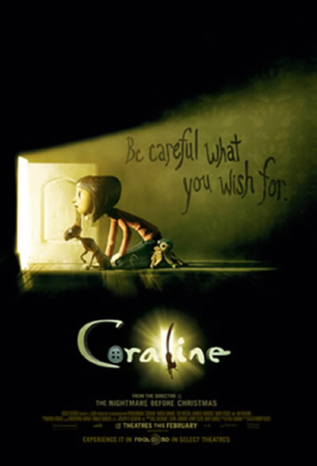
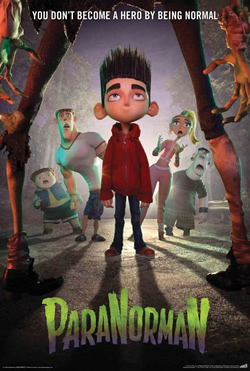
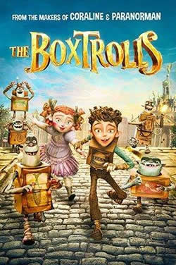
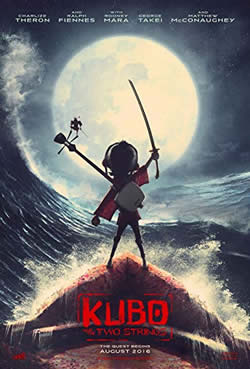
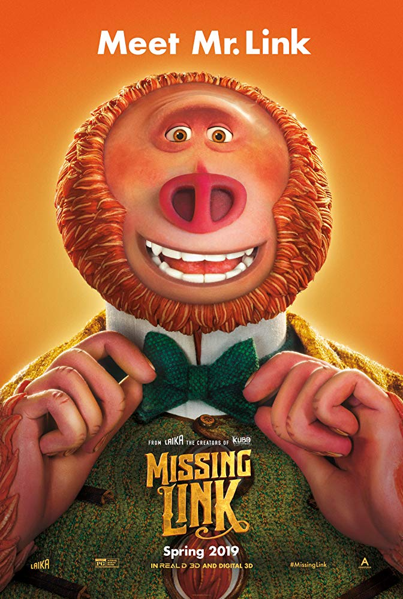

Stop-Motion Animation

There are few companies that still use this medium one of the most notable companies who use stop-motion animation or claymation would LAIKA. LAIKA is most known for stop-motion animation though they have used other mediums before. When LAIKA was first created stop-motion animation was a dying medium, there was not much stop-motion being used at the time. So, they wanted to continue the medium that they loved and bring it into a new era, to invigorate it.
Behind the Scences:
Since creating stop-motion animation or claymation is not an easy or quick task. While not all stop-motion requires figures or models, it's still a time-consuming possess. Over the course of the 10 years LAIKA been around, they've successfully created four of their own stop-motion animated films from Coraline in 2009, then to ParaNorman in 2012,to Boxtrolls in 2014, and to Kubo of the Two Strings in 2016 with their fifth movie coming out in 2019 Missing Link.
|
Coraline
 |
ParaNorman
 |
The Boxtrolls
 |
Kubo and the Two Strings
 |
Missing Link
 |
|---|---|---|---|---|
| While exploring her new home, a girl named Coraline discovers a secret door, behind which lies an alternate world that closely mirrors her own but, in many ways, is better. She rejoices in her discovery until Other Mothers and the rest of her parallel family try to keep her there forever. Coraline must use all her resources and bravery to make it back to her own family and life. | Young Norman Babcock has the ability to speak with the dead -- and he often prefers their company to that of the living. Norman receives word from his strange Uncle Prenderghast that a centuries-old witch's curse on their town is real and about to come true -- and that only Norman can stop it. When zombies rise from their graves, Norman must summon all his courage and compassion and push his paranormal abilities to the limit to save his fellow townspeople. | Eggs, an orphan, lives with the Boxtrolls -- a community of quirky, mischievous creatures who inhabit a cavern beneath the city of Cheesebridge. When villainous Archibald Snatcher hatches a plan to get rid of the pretty harmless beings, Eggs decides to go above ground, where he meets and befriends feisty Winnifred. Together, Eggs and Winnifred devise a daring plan to save the Boxtrolls from extermination. | Young Kubo's peaceful existence comes crashing down when he accidentally summons a vengeful spirit from the past. Now on the run, Kubo joins forces with Monkey and Beetle to unlock a secret legacy. Armed with a magical instrument, Kubo must battle the Moon King and other gods and monsters to save his family and solve the mystery of his fallen father, the greatest samurai warrior the world has ever known. | Tired of living a solitary life in the Pacific Northwest, Mr Link, who is 8 feet tall and covered in fur, recruits fearless explorer Sir Lionel Frost to guide him on a journey to find his long-lost relatives in the fabled valley of Shangri-La. Along with adventurer Adelina Fortnight, the trio encounters their fair share of peril as they travel to the far reaches of the world. Through it all, they learn that sometimes one can find a family in the places one least expects. |